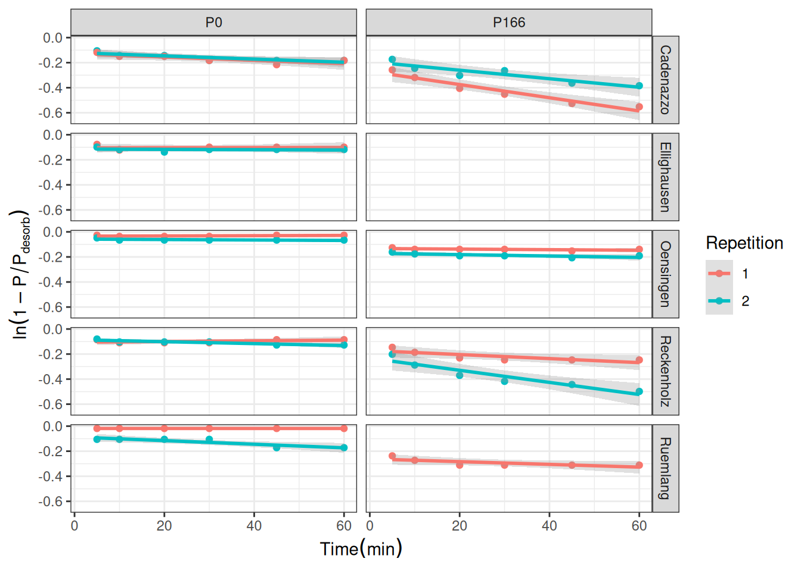
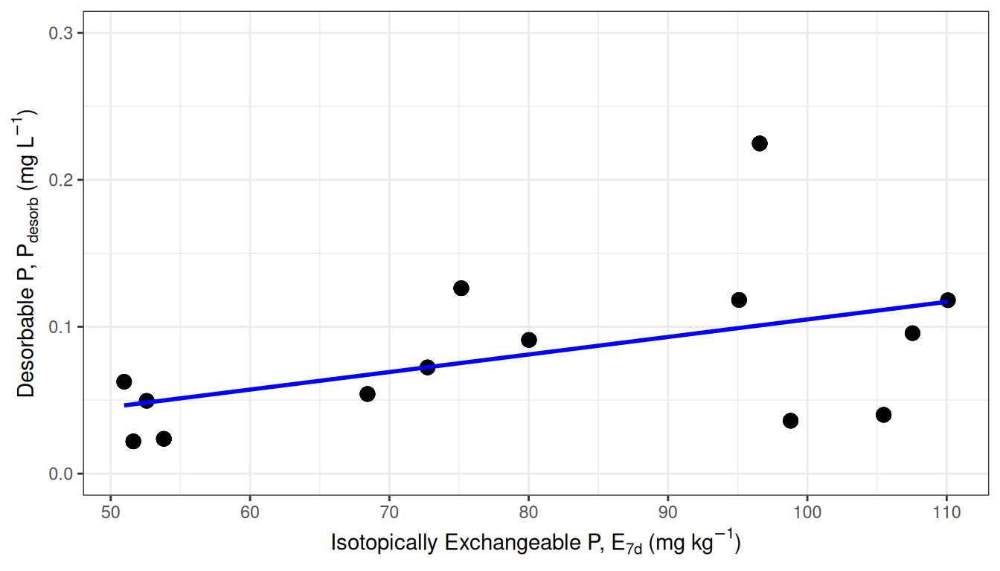
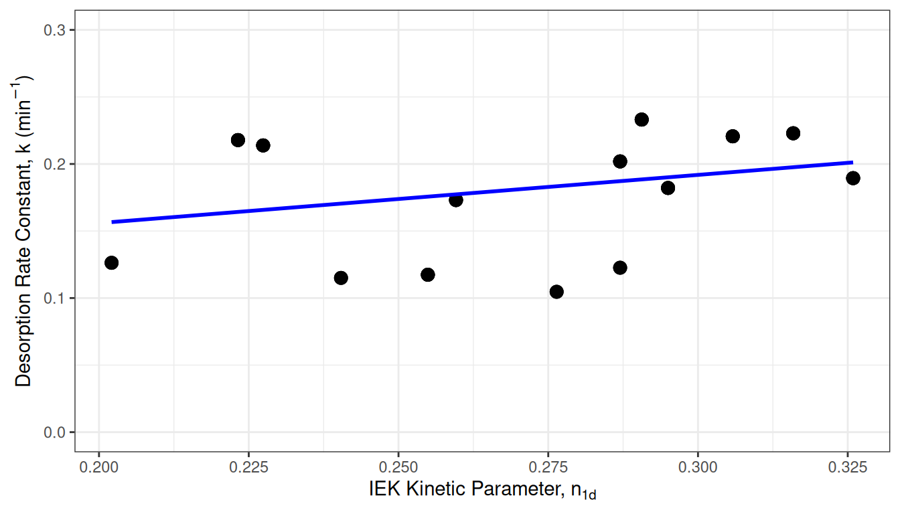
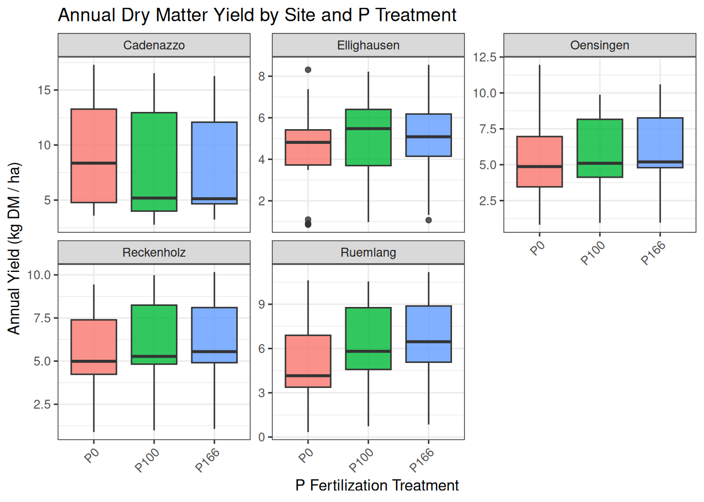
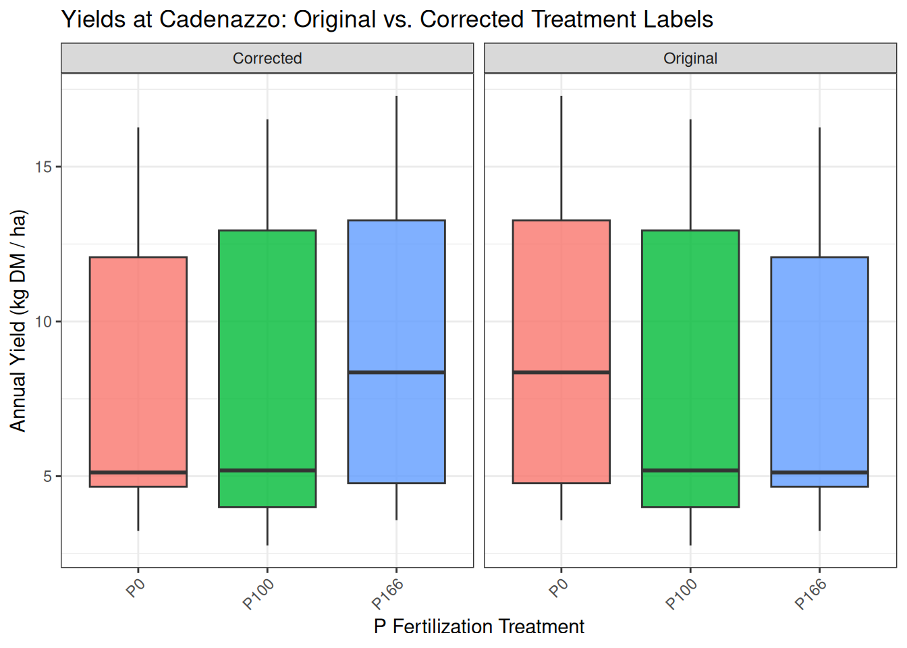

P-release kinetics as a predictor for P-availability in Swiss cropping systems
Authors
Affiliations
Marc Jerónimo Pérez y Ropero
ETH Zurich, Institute of Agricultural Sciences
Frank Liebisch
Agroscope Reckenholz, Water Protection and Substance Flows
Emmanuel Frossard
ETH Zurich, Institute of Agricultural Sciences
Published
March 27, 2026
Abstract
Traditional static soil tests (STPs) for phosphorus (P) often fail to predict agronomic outcomes because they do not account for the kinetic nature of P supply to plant roots. This study investigated whether P desorption kinetic parameters could serve as more effective predictors. Using soils from the long-term Swiss agricultural experiment (STYCS), a sequential extraction method was refined and modeled with a non-linear approach to derive the maximum equilibrium P intensity (\(P_{desorb}\)) and a rate constant (\(k\)). The predictive power of these kinetic parameters was compared against standard Swiss STPs (\(P_{CO_2}\) and \(P_{AAE10}\)) using linear mixed-effects models. For predicting site-normalized yield, STPs were superior, while for national-normalized yield and P-uptake, both methods performed poorly due to dominant pedoclimatic factors. However, the kinetic model demonstrated exceptional success in predicting the long-term P-Balance, with \(P_{desorb}\) alone explaining 57% of the variance, whereas STP models showed no predictive power. We conclude that while traditional STPs remain adequate for short-term within-field fertility, kinetic parameters serve as a vastly superior functional proxy for assessing the long-term P status and sustainability of agricultural soils.
1 Introduction
1.1 The Agronomic Dilemma of Phosphorus
Phosphorus (P) is an essential macronutrient for all life, yet its management in agricultural systems presents a profound dilemma. In the soil solution, P exists almost exclusively as highly reactive orthophosphate anions (\(HPO_4^{2-}\) or \(H_2PO_4^{-}\)). These dissolved species are rapidly immobilized—either adsorbed onto the surfaces of clays and metal oxides or precipitated with cations like calcium, iron, and aluminum to form minerals of low solubility (Brady & Weil, 2016; Sposito, 2008). Consequently, the total soil P stock is vast, but the infinitesimally small fraction dissolved in the soil solution—the only form directly available to plant roots—is highly transient.
1.2 Conceptual Frameworks vs. Operational Definitions
To conceptualize plant P availability, soil science relies on three fundamental thermodynamic and mass-balance parameters (Frossard et al., 2000): 1. P-Intensity (\(I\)): The concentration (or more accurately, the chemical activity) of P in the soil solution at any given moment. 2. P-Quantity or Capacity (\(Q\)): The pool of solid-phase P that is readily desorbable and can replenish the soil solution. 3. Phosphorus Buffering Capacity (PBC): The resistance of the soil to changes in P-Intensity, typically represented as the ratio of change in Quantity to change in Intensity (\(\Delta Q / \Delta I\)).
While these concepts are theoretically elegant, measuring them in natural soils is notoriously difficult. In practice, agronomic soil tests do not measure absolute thermodynamic states; rather, they rely on operational definitions. A soil test value is strictly defined by the specific chemical extractant used, the extraction time, and the soil-to-solution ratio.
1.2.1 Extraction Mechanisms of Standard Soil Tests
Different standard methods target different physicochemical pools of P by employing distinct extraction mechanisms:
Olsen P (\(NaHCO_3\), pH 8.5): This method primarily measures desorbable P. The high concentration of bicarbonate ions (\(HCO_3^-\)) outcompetes orthophosphate for adsorption sites on soil surfaces, effectively exchanging and releasing sorbed P into the solution (Olsen1954?).
P-AAE10 (Ammonium Acetate EDTA, pH 4.65): This stronger extractant attacks both sorbed and precipitated P forms. The EDTA acts as a powerful chelating agent, binding cations (\(Ca^{2+}\), \(Fe^{3+}\), \(Al^{3+}\)) and thereby actively dissolving apatites and other P-bearing salts. Simultaneously, the acetate buffer facilitates the desorption of surface-bound P (Forschungsanstalt für Agrarökologie und Landbau (FAL), 1996).
Water Extractions (\(P_{H_2O}\) and \(P_{CO_2}\)): Weak extractions using distilled or \(CO_2\)-saturated water exert minimal chemical force, attempting to extract readily soluble forms from both the intensity and weakly-bound capacity pools without fundamentally altering the native soil matrix.
1.3 The Problem of Ionic Strength and Activity
The reliance on operational definitions introduces a critical analytical flaw when interpreting these tests, fundamentally tied to the principles of physical chemistry. Standard colorimetric P quantification (e.g., the molybdenum blue method) relies on calibration curves prepared in distilled water, where the ionic strength (\(I\)) is effectively zero.
However, in soil extracts, we measure the chemical activity of the ions, not their true stoichiometric concentration. Because the activity coefficient of an ion decreases as the ionic strength of the solution increases, the background matrix of the extractant drastically alters the measurement.
For strong extractants like Olsen, P-CAL, and P-AAE10, the extractant solution itself has an overwhelmingly high ionic strength. This swamps the native ionic strength of the soil, ensuring that all samples—regardless of their origin—have an identical background matrix. Consequently, while these methods do not yield absolute thermodynamic values, they permit valid relative comparisons of P concentrations between different soils.
Conversely, water extractions like \(P_{H_2O}\) and \(P_{CO_2}\) take on the native, highly variable ionic strength of the specific soil being tested. Reading the activity of these variable soil solutions against an \(I=0\) calibration curve renders the absolute values mathematically incomparable across different pedoclimatic sites.
To utilize \(P_{H_2O}\) as a true measure of theoretical P-Intensity, complex thermodynamic corrections—such as applying the Pitzer equations to calculate precise activity coefficients based on the specific ionic composition of each soil extract—would be required. Currently, such corrections are rarely applied in standard agronomic testing.
1.4 From Static Tests to Kinetic Parameters
Given the analytical limitations of static operational tests and their failure to account for the dynamic replenishment rate of P during the growing season, an alternative approach is required (Flossmann & Richter, 1982; Nye & Tinker, 2000).
To clarify this transition from static operational testing to dynamic modeling, Table 1 maps the fundamental theoretical components of soil P availability to their respective analytical proxies.
Table 1: Conceptual mapping of fundamental phosphorus availability factors to their analytical proxies.
P concentration in the soil solution at a given moment
The pool of solid-phase P that can replenish the solution
The rate of P transfer from the solid to the liquid phase
Traditional / Static Proxy (GRUD)
\(P_{CO_2}\) (Water-soluble P)
\(P_{AAE10}\) (Chelate-extractable P)
Not Measured
Dynamic / Kinetic Proxy (This Study)
Initial P Flux (\(J_0\))
Equilibrium Desorbable P (\(P_{desorb}\))
Desorption Rate Constant (\(k\))
This thesis hypothesizes that kinetic parameters describing P desorption, derived from a time-series laboratory extraction, can bypass the limitations of static capacity measurements and serve as a more effective, functional proxy for agronomic P availability. By characterizing the desorption rate constant (\(k\)) and the equilibrium desorbable P pool (\(P_{desorb}\))—which represents the operational asymptote of P release under specific extraction conditions, rather than the absolute total soil P quantity—using soils from the long-term Swiss agricultural experiment STYCS, this study aims to answer the following research questions:
How well do standard, operationally defined soil tests (\(P_{CO_2}\) and \(P_{AAE10}\)) predict agronomic outcomes, and how are they influenced by overarching soil properties?
Can non-linear modeling of P desorption kinetics provide a robust characterization of the P-Quantity and replenishment rate across diverse Swiss soils?
Do these dynamic kinetic parameters significantly improve the prediction of key agronomic outcomes (yield, P-uptake, and long-term P-balance) compared to traditional static methods?
2 Materials and Methods
2.1 The Long-Term Phosphorus Fertilization Experiment
The soil samples for this thesis originate from a set of six long-term field trials in Switzerland, established by Agroscope between 1989 and 1992. The primary objective of these experiments was to validate and re-evaluate Swiss phosphorus (P) fertilization guidelines by assessing long-term crop yield responses to varying P inputs across different pedoclimatic conditions. A detailed description of the experimental design and site characteristics can be found in Hirte, Richner, et al. (2021).
The experiment was set up as a completely randomized block design with four field replications at each site. The core of the experiment consists of six fixed-plot treatments representing different P fertilization levels, which were applied annually as superphosphate before tillage and sowing. These levels were based on percentages of the officially recommended P inputs: 0% (Zero), 33% (Deficit), 67% (Reduced), 100% (Norm), 133% (Elevated), and 167% (Surplus).
2.2 Experimental Sites
The six experimental sites are located in the main crop-growing regions of Switzerland: Rümlang-Altwi (ALT), Cadenazzo (CAD), Ellighausen (ELL), Grabs (GRA), Oensingen (OEN), and Zurich-Reckenholz (REC). The key soil properties are summarized below.
Table 2: Soil characteristics of the six long-term experimental sites. Data adapted from Hirte et al. (2021).
Site
Soil Type (WRB)
Clay (%)
Sand (%)
Organic C (g/kg)
pH (H2O)
ALT
Calcaric Cambisol
22
48
21
7.9
CAD
Eutric Fluvisol
8
40
14
6.3
ELL
Eutric Cambisol
33
31
23
6.6
GRA
Calcaric Fluvisol
17
34
16
8.3
OEN
Gleyic-calc. Cambisol
37
32
24
7.1
REC
Eutric Gleysol
39
25
27
7.4
Soil samples for this thesis were collected in the year 2022 from the topsoil layer (0-20 cm).
2.3 Phosphorus Desorption Kinetics
The analysis of phosphorus (P) desorption kinetics was based on the principles of sequential extraction established by Flossmann & Richter (1982). The original method is described below, followed by the specific protocol adapted for this study.
2.3.1 Original Method of Flossmann and Richter
The foundational method aims to characterize the P replenishment capacity of the soil. The procedure is as follows:
Removal of Soluble P: 17.5 g of air-dried soil is shaken with 350 ml of deionized water for one hour at 120 Hz in a horizontal soil-shaker. The suspension is centrifuged at 4000 rpm for 15 minutes and the supernatant is decanted to remove the readily soluble P fraction.
Kinetic Extraction: The remaining soil pellet is resuspended with another 350 ml of deionized water. Subsamples of the suspension are taken at specific time intervals (e.g., 10, 30, and 120 minutes).
Analysis: The P concentration in the subsamples is determined colorimetrically.
2.3.2 Adapted Kinetic Protocol for This Study
For this thesis, the original method was modified to capture the desorption process with a higher temporal resolution.
Pre-washing to Remove Soluble P: A pre-washing step was performed to remove the readily soluble P fraction. 10 g of air-dried soil was suspended in 200 ml of deionized water and shaken for 60 minutes at 120 Hz. The suspension was then centrifuged for 15 minutes at 4000 rpm, and the supernatant containing the soluble P was discarded.
Kinetic Extraction: The remaining soil pellet was resuspended in 200 ml of fresh deionized water. The suspension was shaken continuously, and subsamples were taken at eight time points to generate a detailed kinetic curve: 2, 4, 10, 15, 20, 30, 45, and 60 minutes.
Analysis: Each subsample was immediately filtered. The concentration of orthophosphate in the filtered extracts was determined colorimetrically using the malachite green method(Van Veldhoven & Mannaerts, 1987).
2.4 Statistical Analysis
2.4.1 Software and Statistical Environment
All data processing, statistical modeling, and visualization were conducted using the R programming language (v. 4.2.2) (R Core Team, 2022). The primary packages used for the analysis were: - nlme(Pinheiro et al., 2022) for fitting the non-linear mixed-effects models to the kinetic data. - lme4(Bates et al., 2015) and lmerTest(Kuznetsova et al., 2017) for fitting and testing the linear mixed-effects models for agronomic and soil property analyses. - mlr3(Lang et al., 2019) for the systematic feature selection and model validation workflow.
2.4.2 Modeling of Desorption Kinetics
To derive the kinetic parameters, a non-linear mixed-effects model was implemented using the nlme package. This approach was chosen to simultaneously estimate the rate constant (k) and the maximum desorbable P (\(P_{desorb}\)) for each soil sample. The model was fitted to the exact solution of the first-order rate equation:
Where \(P(t)\) is the P concentration at time \(t\), and \(t'\) is an adjusted time (\(t_{min}\) + 3 min) to account for the rapid initial dissolution of P that occurs before the first measurement. In this mixed-effects framework, the overall mean values for \(P_{desorb}\) and k were modeled as fixed effects, while sample-specific deviations from these fixed effects were modeled as random effects to capture the unique desorption characteristics of each individual soil sample.
2.4.3 Comparative Modeling of Soil and Agronomic Parameters
To test the hypotheses of this thesis, two distinct sets of linear mixed-effects models were constructed.
variables_df <-data.frame(Abbreviation =c("$Y_{rel}$", "$Y_{norm}$", "$P_{up}$", "$P_{bal}$", "$k$", "$P_{desorb}$", "$J_0$", "$P_{CO2}$", "$P_{AAE10}$","$Al_d$", "$Fe_d$"),`Variable`=c("Relative Yield", "Normalized Yield", "P Uptake", "P Balance", "Rate Constant", "Desorbable P", "Initial P Flux", "Water-Soluble P", "Chelate-Extractable P","Dithionite-Extractable Al", "Dithionite-Extractable Fe"),Unit =c("unitless", "unitless", "kg P ha⁻¹", "kg P ha⁻¹","min⁻¹", "mg P L⁻¹", "mg P L⁻¹ min⁻¹","mg P kg⁻¹", "mg P kg⁻¹","mg Al kg⁻¹", "mg Fe kg⁻¹"),Description =c("Plot yield normalized by the national mean yield for that year and crop.","Plot yield normalized by the site-specific median yield of the highest P treatment for that year and crop.","Total P removed by the harvested crop biomass over a growing season.","Net P budget, calculated as P inputs (fertilizer) minus P outputs (uptake).","First-order rate constant of P desorption, representing the speed of P release.","Maximum desorbable P, representing the size of the readily available P pool.","Product of $k$ and $P_{desorb}$, representing the initial flux of P from the soil.","Plant-available P measured by CO₂-saturated water extraction [@FAL1996Methodenbuch].","Plant-available P measured by the ammonium-acetate-EDTA extraction method [@FAL1996Methodenbuch].","Free Al oxides (crystalline and amorphous) extracted with dithionite-citrate-bicarbonate [@Mehra1960Iron].","Free Fe oxides (crystalline and amorphous) extracted with dithionite-citrate-bicarbonate [@Mehra1960Iron]." ))knitr::kable(variables_df)
Table 3: Description of variables used in the agronomic and soil models.
Abbreviation
Variable
Unit
Description
\(Y_{rel}\)
Relative Yield
unitless
Plot yield normalized by the national mean yield for that year and crop.
\(Y_{norm}\)
Normalized Yield
unitless
Plot yield normalized by the site-specific median yield of the highest P treatment for that year and crop.
\(P_{up}\)
P Uptake
kg P ha⁻¹
Total P removed by the harvested crop biomass over a growing season.
\(P_{bal}\)
P Balance
kg P ha⁻¹
Net P budget, calculated as P inputs (fertilizer) minus P outputs (uptake).
\(k\)
Rate Constant
min⁻¹
First-order rate constant of P desorption, representing the speed of P release.
\(P_{desorb}\)
Desorbable P
mg P L⁻¹
Maximum desorbable P, representing the size of the readily available P pool.
\(J_0\)
Initial P Flux
mg P L⁻¹ min⁻¹
Product of \(k\) and \(P_{desorb}\), representing the initial flux of P from the soil.
Free Al oxides (crystalline and amorphous) extracted with dithionite-citrate-bicarbonate (Mehra & Jackson, 1960).
\(Fe_d\)
Dithionite-Extractable Fe
mg Fe kg⁻¹
Free Fe oxides (crystalline and amorphous) extracted with dithionite-citrate-bicarbonate (Mehra & Jackson, 1960).
2.4.4 Model Assumptions and Diagnostics
The validity of the linear mixed-effects models (lmer) relies on several key assumptions, primarily that the model residuals are normally distributed and homoscedastic (i.e., have constant variance across the range of predicted values). Prior to finalizing the models, these assumptions were rigorously checked through visual inspection of diagnostic plots, such as quantile-quantile (Q-Q) plots of the residuals and plots of residuals versus fitted values.
Initial exploratory data analysis revealed that several of the predictor variables, most notably the desorbable P pool (\(P_{desorb}\) or PS), were strongly right-skewed. Using such variables directly in the linear models would violate the assumptions of linearity and homoscedasticity, leading to potentially biased and unreliable coefficient estimates.
To address this, various transformations (including square root and logarithmic) were tested on the skewed variables. The natural log-transformation (log()) was found to be the most effective at normalizing the distribution of \(P_{desorb}\) and producing well-behaved model residuals that more closely met the required assumptions. Therefore, log(PS) was used as a fixed effect in all subsequent agronomic models to ensure the statistical validity of the results.
2.4.4.1 Models of P Availability Metrics as a Function of Soil Properties
First, to investigate the underlying soil-chemical drivers of the different P availability metrics (both kinetic and static), a series of models was built to predict each metric from key soil properties.
Fixed Effects Structure: The fixed effects were identical for all models in this category and included the primary soil physical and chemical properties: clay content, silt content, pH, organic carbon content, and dithionite-extractable iron (\(Fe_d\)) and aluminum (\(Al_d\)).
Random Effects Structure: The random effects structure accounted for the nested design of the STYCS experiment, with random intercepts for year, Site, Site:block, and Site:Treatment.
2.4.4.2 Comparative Models of Agronomic Outcomes
Second, the predictive power of the kinetic parameters was directly compared against that of the standard STP methods (“GRUD” system). For each agronomic response variable (Normalized Yield, P Uptake, and P Balance), two competing models were built. These models shared an identical random effects structure to ensure a fair comparison, differing only in their fixed effects.
Random Effects Structure (for all agronomic models): The structure (1|year) + (1|Site) + (1|Site:block) was used to control for variations due to the growing season, location, and in-field spatial differences.
Model 1: The Kinetic Approach
Fixed Effects: This model used the kinetic parameters and their interaction: k * log(PS). The interaction term tests the hypothesis that the benefit of a large desorbable P pool (PS) depends on the rate (k) at which it can be accessed.
Model 2: The Standard STP (GRUD) Approach
Fixed Effects: This model used the two standard Swiss soil tests and their interaction: P_CO2 * P_AAE10.
The relative performance of these two sets of models was then evaluated to determine whether the kinetic parameters provided a significant improvement in predictive power for key agronomic outcomes. Further the relative performance of these two approaches, along with other combinations of predictor sets, was rigorously evaluated using a machine learning benchmark workflow implemented in the mlr3 package (Lang et al., 2019). The predictive power of each predictor set was quantified using 5-fold cross-validation. Performance was measured as the percentage of explained variance on the hold-out data (1 - MSE / Var(y)), providing a robust and unbiased estimate of how well each model would generalize to new data. This benchmark allowed for a direct comparison of the information content provided by the kinetic parameters versus the standard soil tests for predicting key agronomic outcomes.
The results of this study are presented in two main parts. First, the development and validation of the phosphorus (P) desorption kinetic model are detailed, justifying the final modeling approach. Second, the descriptive trends of both agronomic outcomes and soil P parameters in response to long-term fertilization and site differences are explored visually. Finally, the predictive power of the kinetic and standard P parameters is formally evaluated using linear mixed-effects models.
3.1 Establishment of the P-Desorption Kinetic Model
The primary goal was to derive two key parameters for each soil sample: the desorbable P pool (\(P_{desorb}\)) and the rate constant (\(k\)). The analysis proceeded in two stages: an initial test of a linearized model, followed by the implementation of a more robust non-linear model.
3.1.1 Initial Approach: Failure of the Linearized Model
Following the conceptual framework of Flossmann and Richter (1982), the first-order kinetic equation was linearized. A core assumption of this model is that the linear relationship must pass through the origin (0/0) of the coordinate system. To test this, linear models were fitted to the transformed data for each sample individually. The results revealed a systematic failure of this assumption, as the estimated intercepts for the majority of samples were highly significantly different from zero (p < 0.05). This consistent statistical deviation indicated that the linearized approach was not a valid representation of the data. The visual evidence in Figure 1 supports this conclusion.

Figure 1: Test of the linearized first-order kinetic model. The plot visually supports the statistical finding that many intercepts are not zero.
3.1.2 Final Approach: Successful Non-Linear Model
Given the statistical failure of the linearized model, a direct non-linear modeling approach was adopted to estimate both \(P_{desorb}\) and \(k\) simultaneously from the untransformed data. This approach does not rely on the assumption of a zero intercept and proved to be far more successful, accurately capturing the curvilinear shape of the desorption data for nearly all samples (Figure 2). The final parameters were extracted from a non-linear mixed-effects model (nlme) to account for the hierarchical data structure. These final nlme-derived coefficients were used for all subsequent analyses.
Figure 2: Non-linear first-order kinetic model fits for P desorption over time. Points represent measured data and solid lines represent the fitted model for each replicate.
3.2 Comparison with Isotopic Exchange Kinetics (IEK)
To validate the newly derived kinetic parameters against an established benchmark, the capacity (\(P_{desorb}\)) and kinetic (\(k\)) parameters were compared to data from Isotopic Exchange Kinetics (IEK) studies previously conducted on the same long-term trial sites by Demaria et al. (2013). This comparison aims to determine if the simpler, non-equilibrium desorption method used in this thesis captures similar aspects of soil P dynamics as the more complex, equilibrium-based IEK method.
The size of the desorbable P pool (\(P_{desorb}\)) was compared against the long-term isotopically exchangeable P pool measured after 7 days (\(E_{7d}\)). The desorption rate constant (\(k\)) was compared against the IEK kinetic parameter measured after 24 hours (\(n_{1d}\)). Spearman’s rank correlation was used to robustly test for monotonic trends between the different methods.

(a) Capacity: \(P_{\text{desorb}}\) vs \(E_{\text{7d}}\)

(b) Kinetics: k vs \(n_{\text{1d}}\)
Figure 3: Correlation between desorption-derived kinetic parameters and IEK-derived parameters. (A) Capacity parameters: Desorbable P (\(P_{\text{desorb}}\)) vs. Isotopically Exchangeable P (\(E_{\text{7d}}\)). (B) Kinetic parameters: Rate Constant (\(k\)) vs. IEK kinetic parameter (\(n_{\text{1d}}\)).
The analysis revealed a statistically significant, moderate positive correlation between the capacity parameters, \(P_{desorb}\) and \(E_{7d}\) (Figure 3). The Spearman’s rank correlation coefficient was 0.4 with a p-value of < 0.001.
Similarly, a statistically significant, moderate positive correlation was found between the kinetic parameters, \(k\) and \(n_{1d}\) (Figure 3). The Spearman’s rank correlation coefficient was 0.36 with a p-value of < 0.001.
These results indicate that the simpler, non-equilibrium desorption method used in this study successfully captures both the capacity and intensity aspects of soil P lability, providing results that are consistent with the more complex, equilibrium-based IEK method reported by (Demaria et al., 2013).
3.3 Effects of Fertilization on Agronomic and Soil Parameters
Having established a robust method to determine the kinetic parameters, the next step was to explore the effects of the long-term P fertilization treatments on both the agronomic outcomes and the soil P test parameters.
3.3.1 Agronomic Responses to P Fertilization
The long-term application of different P fertilization levels had a pronounced impact on the primary agronomic outcomes, including two different metrics for yield, P Uptake (\(P_{up}\)), and P Balance (\(P_{bal}\)), though the response varied considerably between sites (Figure 4).
Figure 4: Agronomic response variables across six P fertilization treatments and six experimental sites. Data from 2017-2022.
Yield Metrics (\(Y_{norm}\) and \(Y_{rel}\)): Both yield metrics showed a generally positive response to P fertilization. The site-normalized yield (\(Y_{norm}\)) shows the response relative to the site’s potential for that year, with most yields plateauing around the Norm (100%) treatment. The national-normalized yield (\(Y_{rel}\)) provides a broader context, showing how yields at each site compare to the national average.
P Uptake (\(P_{up}\)): P uptake by crops followed a similar trend to yield, increasing with fertilization, often continuing to increase at the highest fertilization levels, suggesting luxury consumption.
P Balance (\(P_{bal}\)): The P balance showed a strong, linear relationship with fertilization. The Zero and Deficit treatments resulted in a negative balance (mining soil P), while the Elevated and Surplus treatments led to a significant P surplus.
3.3.2 Soil P Parameters as a Function of P Fertilization
The different soil P test parameters, including the standard STP methods and the newly derived kinetic parameters, all responded to the long-term fertilization treatments (Figure 5).
Figure 5: Soil P parameters across six P fertilization treatments and six experimental sites.
Standard STPs (\(P_{CO_2}\) and \(P_{AAE10}\)): Both standard soil P tests showed a clear and consistent increase with rising P fertilization levels across all sites, confirming their sensitivity to management.
Kinetic Parameters (\(k\), \(P_{desorb}\), and \(J_0\)): Desorbable P (\(P_{desorb}\)): This parameter behaved very similarly to the standard STPs, increasing steadily with P fertilization and confirming its role as a “capacity” indicator. Rate Constant (\(k\)): The rate constant showed a more complex pattern, with no strong, consistent trend with fertilization. This suggests that while fertilization increases the amount of available P, it may not change the intrinsic release rate. Initial P Flux (\(J_0\)): As the product of \(P_{desorb}\) and \(k\), this parameter integrates both capacity and intensity. It showed a strong positive response to fertilization, driven primarily by the increase in \(P_{desorb}\).
These initial observations suggest that the kinetic parameters, particularly the rate constant \(k\), may provide unique information about the soil’s P dynamics not captured by the static tests P-CO2 and P-AAE10 alone. The next section will use formal statistical models to test these relationships.
3.4 Predicting P Parameters from Soil Properties
To understand the underlying drivers of the standard and kinetic P parameters, and to test Hypotheses 1b and 2b, a series of linear mixed-effects models were fitted. Each model predicted one of the P parameters based on the core soil properties: organic carbon (\(C_{org}\)), clay content, silt content, pH, and dithionite-extractable Al (\(Al_d\)) and Fe (\(Fe_d\)). The results are summarized in Table 4.
Table 4: Results of linear mixed-effects models predicting P parameters from intrinsic soil properties Table 3. Significance codes: ‘’ p < 0.001, ’’ p < 0.01, ’’ p < 0.05.
Predictor
\(P_{desorb}\)
\(k\)
\(J_0\)
\(P_{CO_2}\)
\(P_{AAE10}\)
Intercept
21.444
0.454
21.189
14.014
23.126
\(Al_{d}\)
-8.706***
-0.072***
-8.631***
-4.417***
-9.473***
\(Fe_{d}\)
-1.068***
0.005
-1.084***
-0.845***
-0.606***
Clay
-0.006***
-0.016***
-0.085***
0.015
-0.029***
\(C_{org}\)
0.612
0.137
1.250
0.269
1.454
pH
-0.018***
-0.021***
-0.092***
0.124
0.012
Silt
-0.000***
0.004
0.008
-0.015***
-0.049***
\(R^2_m\)
0.393
0.212
0.368
0.362
0.494
\(R^2_c\)
0.996
0.915
0.993
0.995
0.997
The analysis reveals that the capacity-based P pools and the kinetic rate constant are controlled by different sets of soil properties, strongly supporting the hypotheses.
In line with Hypothesis 2b, the kinetic capacity parameter, Desorbable P (\(P_{desorb}\)), showed a highly significant negative relationship with both dithionite-extractable iron (\(Fe_d\)) and aluminum (\(Al_d\)). This provides strong evidence that the total pool of free oxides, which represent the primary P sorption surfaces in the soil, is a key factor controlling the size of the readily desorbable P pool.
Also confirming Hypothesis 2b, the Rate Constant (k) was governed by a different set of properties. It was not significantly influenced by the free oxides but instead showed a significant negative relationship with Clay content and a positive relationship with organic carbon (\(C_{org}\)). This clearly distinguishes the kinetic component from the capacity component, suggesting that while oxides control how much P can be held, soil texture and organic matter influence how fast it can be released.
The standard STP methods showed patterns consistent with Hypothesis 1b. Organic Carbon (\(C_{org}\)) had a highly significant positive effect on \(P_{AAE10}\), and pH had a significant negative effect, as predicted. The relationship of the STP measures with the dithionite-extractable oxides was less consistent than that of \(P_{desorb}\), with only \(P_{AAE10}\) showing a significant negative link to \(Al_d\).
3.5 Predictive Modeling of Agronomic Outcomes
To formally evaluate the predictive power of the standard STP methods against the kinetic parameters, a series of linear mixed-effects models were fitted for each of the primary agronomic response variables. To test the central hypotheses of this thesis, the predictive power of the kinetic parameters was directly compared against that of the standard STP methods for several key agronomic outcomes. For each response variable—Normalized Yield (\(Y_{rel}\)), P Uptake (\(P_{up}\)), and P Balance (\(P_{bal}\))—a set of competing linear mixed-effects models was constructed.
To ensure a fair comparison, all models shared an identical random effects structure ((1|year) + (1|Site) + (1|Site:block)), differing only in their fixed effects. Four distinct models were evaluated: \(P_{CO_2}\) Model: Used the standard water-soluble P test as the sole predictor. \(P_{AAE10}\) Model: Used the standard chelate-extractable P test as the sole predictor. STP Interaction Model: Included both standard tests and their interaction term (\(P_{CO_2} * P_{AAE10}\)) to capture their combined effect. Kinetic Model: Used the log-transformed desorbable P pool (\(log(P_{desorb})\)), the rate constant (k), and their interaction (\(J_0\)) as predictors.
The performance of these models for each agronomic outcome is presented in the following sections.
3.5.1 Anomaly in the Cadenazzo Yield Data
A preliminary visual analysis of the agronomic data revealed a significant anomaly at the Cadenazzo (CAD) site. As shown in Figure 6, the Cadenazzo site exhibited substantially higher overall yields than all other locations. More critically, the yield response to P fertilization did not follow the expected agronomic trend. The zero-fertilizer treatment (P0) showed the highest median yield, while the surplus treatment (P166) was among the lowest.
A simple label swap between P0 and P166 was hypothesized and tested (Figure 7). While this correction established a more monotonic trend, the resulting pattern remained questionable, with the corrected P166 yield being inexplicably higher than the P100 and P133 treatments, which is not a typical biological response.
Unfortunately, a deeper investigation into the cause of this anomaly was impossible, as the corresponding soil analysis data (STPs, organic carbon, etc.) for the Cadenazzo site were unavailable due to sample loss. Without this data, it cannot be determined whether the issue stems from a persistent micro-site anomaly, a more complex data recording error, or other unknown factors. Given these unresolved inconsistencies and the site’s unusually high productivity, the Cadenazzo data was retained in the models but is recognized as a significant source of unexplained variance that likely contributed to the poor predictive performance of all models for yield-related metrics like \(Y_{norm}\) and \(Y_{rel}\).

Figure 6: Annual dry matter yield across P fertilization treatments, faceted by experimental site, highlighting the anomalous pattern at Cadenazzo (CAD).

Figure 7: Comparison of Cadenazzo yields with original and swapped (P0 <> P166) treatment labels.
The analysis reveals a clear and striking difference between the predictive power of the standard STP methods and the kinetic parameters for site-normalized yield, as seen in Table 5.
Table 5: Results of linear mixed-effects models predicting Site-Normalized Yield (\(Y_{norm}\)).
Predictor
\(P_{CO_2}\)
\(P_{AAE10}\)
STP-interaction
kinetic
Intercept
1.059***
0.532***
1.096***
0.980
\(k\)
2.262
\(J_0\)
0.931
\(P_{desorb}\)
-0.063
\(P_{AAE10}\)
0.120***
-0.006
\(P_{CO_2}\)
0.162***
0.137
\(P_{CO_2} \times P_{AAE10}\)
0.016
\(R^2_m\)
0.218
0.198
0.220
0.014
\(R^2_c\)
0.358
0.474
0.365
0.360
The analysis for site-normalized yield showed that both the $P_{CO_2}$ and $P_{AAE10}$ models had highly significant coefficients and explained 21.8% and 19.8% of the variance, respectively. The combined STP-interaction model performed best, explaining 22% of the variance. In contrast, the kinetic model had a marginal R² of only 1.4%, and none of its parameters were statistically significant.
The models predicting national-normalized yield (\(Y_{rel}\)) reveal that both standard and kinetic soil phosphorus tests struggle to explain the variance in crop yields on their own, though standard tests show slightly better performance in this context.
Table 6: Results of linear mixed-effects models predicting National-Normalized Yield (\(Y_{rel}\)).
Predictor
\(P_{CO_2}\)
\(P_{AAE10}\)
STP-interaction
kinetic
Intercept
104.862***
75.343***
130.274***
56.375
\(k\)
377.498**
\(J_0\)
171.507**
\(P_{desorb}\)
-27.486*
\(P_{AAE10}\)
7.111**
-6.537
\(P_{CO_2}\)
8.853**
23.091
\(P_{CO_2} \times P_{AAE10}\)
-3.110
\(R^2_m\)
0.074
0.063
0.078
0.022
\(R^2_c\)
0.569
0.537
0.596
0.439
3.5.3.1 Performance of Standard STP Methods
The models based on standard soil tests, $P_{CO_2}$ and $P_{AAE10}$, were significant predictors, explaining 7.4% and 6.3% of the variance in yield, respectively. The model including their interaction term performed slightly better, explaining 7.8% of the variance. The model based on kinetic parameters demonstrated lower predictive power, with a marginal R² of 2.2%. A critical observation across all models is the large discrepancy between the marginal R² (\(R^2_m\)) and the conditional R² (\(R^2_c\)). For instance, in the best-performing STP model, the marginal R² is only 0.078, but the conditional R² is 0.596.
3.5.4 Predicting P-Uptake (\(P_{up}\))
When predicting P-uptake, both the standard and kinetic models demonstrate similarly weak predictive power, with none of the approaches standing out as superior.
Table 7: Results of linear mixed-effects models predicting P-Export (\(P_{up}\)).
Predictor
\(P_{CO_2}\)
\(P_{AAE10}\)
STP-interaction
kinetic
Intercept
27.522***
8.090
30.632*
29.599***
\(k\)
22.622
\(J_0\)
11.928
\(P_{desorb}\)
1.954
\(P_{AAE10}\)
4.824***
-0.805
\(P_{CO_2}\)
5.177***
8.069
\(P_{CO_2} \times P_{AAE10}\)
-0.814
\(R^2_m\)
0.064
0.073
0.065
0.064
\(R^2_c\)
0.625
0.603
0.623
0.648
When predicting P-uptake, the individual standard soil tests, \(P_{CO_2}\) and \(P_{AAE10}\), were significant positive predictors, explaining 6.4% and 7.3% of the variance, respectively. The interaction model did not improve the explained variance. The kinetic model performed on par with the standard individual tests, explaining 6.4% of the variance, though none of its parameters were individually significant. As with yield, a large difference between the marginal and conditional R² values was observed across all models.
3.5.5 Predicting P-Balance (\(P_{bal}\))
The prediction of the P-Balance (\(P_{bal}\)) reveals a stark and decisive contrast between the kinetic and standard STP approaches, providing the strongest evidence in favor of the kinetic methodology.
Table 8: Results of linear mixed-effects models predicting P-Balance (\(P_{bal}\)).
Predictor
\(P_{CO_2}\)
\(P_{AAE10}\)
STP-interaction
kinetic
Intercept
4.441
7.691
3.649
43.833***
\(k\)
84.993
\(J_0\)
33.029
\(P_{desorb}\)
16.947***
\(P_{AAE10}\)
-0.794
0.187
\(P_{CO_2}\)
-0.928
-2.442
\(P_{CO_2} \times P_{AAE10}\)
0.462
\(R^2_m\)
0.001
0.001
0.001
0.572
\(R^2_c\)
0.810
0.807
0.811
0.744
The kinetic model emerged as a strong predictor of the P-Balance, explaining 57.2% of the variance, with the desorbable P pool (\(P_{desorb}\)) being a highly significant predictor. In contrast, all models based on the standard STP methods had marginal R² values of 0.1% and no significant predictors. The conditional R² for the STP models was high (around 0.81), while the kinetic model had both a high marginal R² (0.572) and a high conditional R² (0.744).
4 Discussion
Before addressing the individual hypotheses, it is crucial to first evaluate the overall feasibility of the experimental results and the integrity of the underlying data. A critical examination of the agronomic data revealed a significant and implausible anomaly at the Cadenazzo (CAD) site. Across multiple years, the zero-fertilizer treatment (P0), which has not received P for nearly 40 years, consistently showed higher median yields than the optimally fertilized treatments. This contradicts fundamental agronomic principles and stands in contrast to previous findings from the same long-term experiment (hirte2021?), suggesting a systematic issue with the data from this specific site. As the corresponding soil analysis data for Cadenazzo was unavailable, a definitive explanation for this anomaly could not be found. This unresolved issue, combined with the site’s uniquely high productivity, introduces significant unexplained variance and must be considered when interpreting the performance of the predictive models, particularly for yield-based metrics.
A second key observation is the consistent, large discrepancy between the marginal R-squared (\(R^2_m\)) and conditional R-squared (\(R^2_c\)) values in the models for yield and P-uptake. This finding is plausible and expected, as it underscores that in P-sufficient Swiss soils, crop yield is primarily co-limited by overarching pedoclimatic factors rather than P availability alone. The Swiss fertilization guidelines (GRUD), on which the P100 treatment is based, were designed to ensure P is never limiting, which over decades has led to a widespread accumulation of “legacy P” in many agricultural soils (Hirte et al., 2018). Consequently, the P100 and P166 treatments in this study were likely operating in a P-surplus range, well above the critical threshold for a yield response. This lack of P-limitation means the experiment was not designed to effectively test the sensitivity of different soil P metrics for predicting yield, which fundamentally influences the size and significance of the effects we could detect.
Therefore, a marginal R² of around 8% for a model predicting national-normalized yield based on a single soil P metric should not be considered low. In fact, it is arguably higher than expected, demonstrating that despite the overwhelming influence of climate and the general P-sufficiency of the soils, both static and kinetic P tests can still capture a statistically significant, albeit small, portion of the variance in crop productivity. With this context established, we can proceed to a detailed evaluation of the specific hypotheses.
4.1 Hypothesis 1: The Nuanced Role of Standard Soil Tests
Hypothesis 1a posited that standard STP methods (\(P_{CO_2}\) and \(P_{AAE10}\)) would correlate with the P-Balance but be weak predictors of crop yield. The findings challenge this hypothesis in two unexpected ways.
First, the STP methods failed completely to predict the P-Balance. The models showed no relationship between these static tests and the long-term nutrient surplus or deficit, directly contradicting our hypothesis. This is a critical finding, as it suggests that while tests like \(P_{CO_2}\) and \(P_{AAE10}\) are sensitive to short-term changes from annual fertilization, they do not adequately capture the cumulative, long-term P status of the soil system.
Second, the performance of STP methods in predicting yield was highly context-dependent. When predicting site-normalized yield (\(Y_{norm}\)), which assesses the yield response relative to a site’s own potential, the STP models were remarkably effective, explaining up to 22% of the variance. This result contradicts the part of our hypothesis that expected weak performance and suggests that for within-field management, where the goal is to ensure P is not limiting relative to that specific environment’s potential, traditional capacity-based tests are well-suited and robust.
However, when predicting national-normalized yield (\(Y_{rel}\)) and P-uptake (\(P_{up}\)), the STP models performed poorly, aligning with our initial expectations. The weak performance in predicting yield and P-uptake can likely be attributed to several factors. Firstly, crop yield in field settings is often co-limited by multiple factors beyond phosphorus. Year-to-year variations in climate, such as solar radiation and water availability, as well as the supply of other key nutrients like nitrogen, can become the primary drivers of productivity, masking the more subtle influence of soil P status (Sadras, 2002; Sinclair, 1998). The large gap between the marginal and conditional \(R^2\) in our models strongly suggests that these site- and year-specific variables, captured by the random effects, were indeed the dominant factors.
Furthermore, response variables like \(P_{up}\) and \(P_{bal}\) are calculated as the product of yield and P concentration, which can introduce and propagate measurement uncertainty. If yield itself is only weakly correlated with soil P status, this “noise” is carried into the derived variables, making it even more difficult to establish a clear statistical relationship (Rowe et al., 2016).
The predictive weakness may also stem from the experimental design and modeling approach. This study utilized samples primarily from the P-deficient (0%) and P-sufficient (100% and 167%) treatments. Crop yield response to fertilizer typically follows a saturation curve, and it is possible that our dataset was concentrated on the less responsive parts of this curve, thus lacking statistical power in the most dynamic range (Schlesinger, 2009). While our use of a linear mixed-effects model was appropriate for the available data, it cannot capture the diminishing returns characteristic of crop nutrient response. As demonstrated by Hirte et al. (2021) on these same STYCS trials, non-linear models like the Mitscherlich equation are better suited for describing such saturation kinetics but would require data from the intermediate fertilization levels to be applied robustly (Hirte, Stüssel, et al., 2021).
Regarding Hypothesis 1b, the findings were largely supportive. The analysis of soil properties confirmed that STP measurements are not pure measures of P but are instead complex indices reflecting a combination of P status and overarching soil chemistry. The predicted negative relationship between pH and \(P_{AAE10}\) was observed, and the underlying chemical mechanisms for this are well-established, particularly in calcareous or high-pH soils like several in this study (e.g., ALT, GRA).
The AAE10 method relies on two key components: ammonium acetate as a buffer and EDTA as a chelating agent to dissolve mineral-bound P. However, its effectiveness is compromised in soils with high pH and an abundance of free calcium (\(Ca^{2+}\)) and magnesium (\(Mg^{2+}\)) cations, often from calcium carbonates (\(CaCO_3\)). There are two primary reasons for this:
Consumption of EDTA: The primary role of EDTA is to bind to cations like iron and aluminum that precipitate phosphate, thereby releasing P into the solution. However, EDTA has a high affinity for divalent cations, so in calcareous soils, a significant portion of the EDTA is consumed by binding to the abundant free \(Ca^{2+}\) and \(Mg^{2+}\), making it less available to extract the target phosphate compounds (Fixen & Grove, 1993).
Buffering Capacity: The acetate buffer in the AAE10 solution is designed to maintain a consistent pH. However, soils with high carbonate content have a strong natural buffering capacity that can resist the pH change intended by the extractant, further reducing its efficiency in dissolving pH-sensitive P minerals.
This known limitation explains why \(P_{AAE10}\) can underestimate plant-available P in calcareous soils and supports our finding of a significant pH-dependence. It underscores that the choice of an appropriate soil test must take into account the fundamental chemistry of the soil matrix itself.
4.2 Hypothesis 2: Characterizing P Desorption Kinetics
Hypothesis 2a focused on the methodological feasibility of characterizing P desorption. It predicted that while the process would follow first-order kinetics, a non-linear modeling approach would be more robust than the original linearized method proposed by Flossmann & Richter (1982). The results from this thesis unequivocally support this hypothesis. Our initial attempts to linearize the desorption data failed systematically, with model intercepts deviating significantly from the required origin, thus violating a core assumption of the method.
This statistical failure has a fundamental chemical basis. The linearized model requires an a priori estimate of the maximum desorbable P pool (\(P_{desorb}\)), which Flossmann and Richter approximated by subtracting a water-soluble P measurement from a stronger chemical extractant (e.g., \(P_{desorb} \approx P_{CAL} - P_{H2O}\)). However, in all but the most severely depleted soils, the P value from the stronger extractant is orders of magnitude greater than that from water (\(P_{CAL} >> P_{H2O}\)). This leads to an estimated \(P_{desorb}\) that is vastly higher than the actual solubility limit of phosphate in the soil solution. A kinetic desorption curve in water can physically only plateau at the concentration dictated by mineral solubility; by providing the model with a theoretical maximum that is chemically unattainable, the linearization becomes mathematically invalid. This explains why the linearized approach failed and underscores the necessity of a method that does not rely on such flawed assumptions.
In contrast, the direct application of a non-linear mixed-effects model successfully captured the curvilinear nature of P release for nearly all samples by estimating \(P_{desorb}\) directly from the kinetic data itself. This confirms that while the foundational concept of first-order kinetics is sound, modern computational methods that avoid data transformation provide a far more accurate and statistically valid approach to parameter estimation (Kuang et al., 2012).
While the non-linear model proved robust, visual inspection of the kinetic curves revealed that two specific replicates—from the P100 and P166 treatments at the Ellighausen site—showed markedly higher and faster P release than their counterparts. To determine whether this was due to a methodological artifact or true field variability, the standard soil test results for all replicates at this site were examined (Figure 8). The diagnostic plot clearly shows that these same two replicates also registered as significant outliers for both \(P_{CO_2}\) and \(P_{AAE10}\). This consistent pattern across three independent measurement techniques strongly suggests that the deviation is not a result of error in the kinetic procedure, but rather reflects genuine micro-site heterogeneity.
Such heterogeneity could arise from several sources. One plausible explanation, given the decades-long application of Triple-Superphosphate (primarily monocalcium phosphate), is the presence of residual, undissolved fertilizer granules in the soil matrix. The accidental inclusion of even a single such particle in the 10g subsample for a specific replicate would lead to artificially inflated P values across all chemical extractions (Fisher, 1925). This highlights a fundamental challenge in soil analysis and reinforces the importance of robust modeling. The use of a non-linear mixed-effects model is particularly advantageous in this context, as it is designed to handle such individual variations by estimating a common overall trend while allowing for random deviations for each sample, thereby preventing a few anomalous data points from unduly influencing the overall conclusions [Fisher (1925); Fisher1935; Yates1964; Van Es et al. (2002)].
Ultimately, the successful validation of our derived parameters against established Isotopic Exchange Kinetic (IEK) data further solidifies the robustness of our methodological approach, demonstrating that this simpler extraction method effectively captures both the capacity (\(P_{desorb}\)) and intensity (k) aspects of P dynamics.
Figure 8: Diagnostic plot for \(P_{\text{AAE10}}\) (left axis) and \(P_{\text{CO2}}\) (right axis) for all replicates at the Ellighausen (ELL) site, faceted by P fertilization treatment.
Hypothesis 2b predicted that the derived kinetic parameters would be significantly influenced by fundamental soil properties, and this was also strongly supported by the findings. The analysis revealed a clear and meaningful separation in the drivers of the capacity and kinetic components. The desorbable P pool (\(P_{desorb}\)), representing the quantity of readily available P, was strongly and negatively correlated with dithionite-extractable iron and aluminum. This aligns perfectly with established soil science principles, as these free oxides provide the primary sorption surfaces that bind P, thereby controlling the size of the exchangeable pool (Brady & Weil, 2016; Sposito, 2008).
Conversely, the rate constant (k), which represents the speed of P release, was not primarily driven by the oxide content but was instead significantly related to soil texture (clay content) and pH. The negative relationship with clay content is logical, as higher clay content can increase the tortuosity of diffusion pathways, effectively slowing the movement of phosphate from the solid phase to the bulk solution (Nye & Tinker, 2000). The influence of pH is also consistent with known phosphate chemistry, as pH governs the speciation of orthophosphate ions and their affinity for mineral surfaces (Sparks, 2003). These distinct relationships confirm that \(P_{desorb}\) and k are not redundant parameters; they represent fundamentally different aspects of P availability—the size of the pool and the rate of access to it—which are governed by different soil-chemical and physical properties.
4.3 Hypothesis 3: The Context-Dependent Power of Kinetic Parameters
The central hypothesis of this thesis predicted that a model incorporating kinetic parameters (k and \(P_{desorb}\)) would explain a significantly greater proportion of the variance in agronomic outcomes compared to models based on standard, static STP measurements. The results provide a nuanced verdict: the hypothesis was strongly supported in one context, but clearly refuted in others, revealing that the utility of kinetic parameters is highly dependent on the specific agronomic question being addressed.
The most compelling support for Hypothesis 3 came from the prediction of the P-Balance (\(P_{bal}\)). In this analysis, the kinetic model, driven by the desorbable P pool (\(P_{desorb}\)), was exceptionally powerful, explaining over 57% of the variance. In stark contrast, the standard STP models had zero predictive power. This is the most significant finding of this study. The P-Balance represents the long-term integration of nutrient inputs and outputs, and the fact that a kinetic capacity parameter (\(P_{desorb}\)) so perfectly captures this state demonstrates its superiority for assessing the cumulative effects of soil management. It suggests that while standard tests reflect the immediate chemical environment, \(P_{desorb}\) provides a more holistic measure of the soil’s P supply capacity and its legacy from past fertilization.
However, when predicting yield and P-uptake, the hypothesis was not supported. The reasons for this are likely multifaceted and highlight several limitations of the current study. A primary factor is that the P fertilization levels analyzed (0%, 100%, and 167%) may not have created conditions where P was the primary limiting factor for yield. The standard 100% fertilization rate in the STYCS trial is already designed for optimal yield, and decades of application at this level have likely led to significant “legacy P” accumulation (Hirte et al., 2018). Consequently, the 167% treatment would only add to this surplus, while the 0% treatment represents an extreme deficiency. A direct comparison between kinetic and static tests would be far more powerful if intermediate levels (e.g., 33% and 67%) were included, as this is the range where the rate of P supply is most likely to be a yield-limiting factor.
Furthermore, the linear mixed-effects models used, while appropriate for the data structure, could not account for two major sources of variation. First, as seen in the exploratory analysis in with the mlr3-model-comparisons, weather variables alone were often strong predictors of yield. The (1|year) and (1|Site) random effects in our models are proxies for this, bundling complex pedoclimatic information—such as growing degree days, soil moisture patterns, and soil textural differences—into single terms. These effects were so large that they overshadowed the more subtle influence of soil P status. Future studies could improve predictive power by incorporating specific weather covariates as fixed effects, allowing for a clearer isolation of the soil P signal.
Second, the assumption of a linear P response is a simplification. As shown by Hirte et al. (2021), crop yield response to P is non-linear and best described by a saturation curve. This is particularly relevant given the high yields observed at some sites, such as Cadenazzo, where relative yields reached up to 300% in some years, a level far beyond any plausible linear response to P. A more robust modeling approach would involve fitting non-linear models, though this would, as previously noted, require data from the full spectrum of fertilization treatments.
4.3.1 Conclusion and Outlook
This thesis set out to test the hypothesis that P desorption kinetics, grounded in the diffusion-limited reality of P uptake, would provide a superior prediction of agronomic outcomes compared to conventional static soil tests (STPs). The first step required a critical re-evaluation of the kinetic methodology itself. We successfully demonstrated that the original linearized approach of Flossmann & Richter (1982) is based on a chemically flawed premise, where the estimated desorbable P pool (\(P_{desorb}\)) far exceeds the physical solubility of phosphate. By implementing a direct non-linear modeling approach, we derived robust kinetic parameters free from these assumptions. However, this refined method remains sensitive, as evidenced by outlier replicates that were ultimately attributed to the “nugget effect” of residual fertilizer granules, a persistent challenge in soil analysis.
The comparative analysis of the predictive models yielded a nuanced picture. Contrary to our primary hypothesis, the kinetic parameters were not universally superior. For predicting site- and national-normalized yield (\(Y_{norm}\), \(Y_{rel}\)) and P-uptake (\(P_{up}\)), the kinetic model offered no significant advantage and, in some cases, performed worse than standard STP methods. This strongly suggests that under the conditions of the STYCS trial, where P was likely not the primary limiting factor for yield due to a history of adequate fertilization, the subtle differences in P supply dynamics were overshadowed by larger environmental drivers.
However, the most striking finding of this study was the exceptional success of the kinetic model in predicting the P-Balance (\(P_{bal}\)). While STP methods completely failed, the desorbable P pool (\(P_{desorb}\)) alone explained over 57% of the variance in the long-term nutrient budget. The interpretation of this is critical: the P-Balance is an indicator of nutrient stewardship and environmental risk. A soil with a highly positive P-Balance has a large store of “legacy P,” which can sustain future crops but also poses a risk of loss to the environment. The success of \(P_{desorb}\) as a predictor means it is a far superior metric for assessing this long-term soil P status and sustainability than conventional STPs.
Furthermore, this study provides evidence questioning the concurrent use of multiple STP methods. While systems like GRUD and VDLUFA employ two tests to differentiate P-intensity and P-capacity, our models showed that \(P_{CO_2}\) and \(P_{AAE10}\) contained largely redundant information for predicting agronomic outcomes. The non-significant interaction term indicated that combining them did not improve predictions. This is a crucial finding, suggesting that while these methods may extract chemically distinct P pools—as shown by the isotopic exchange data from Demaria et al.—this chemical difference does not translate into a functional difference for agronomic modeling in this context.
Looking forward, this work should be seen as a successful “beta-trial” for a promising, mechanistically-grounded soil testing approach. The current kinetic protocol is in dire need of refinement to improve its robustness. The centrifugation step (4000 rpm for 15 minutes) created highly compact sediments, particularly in clay-rich soils. Consequently, the magnetic stir bar required considerable time (up to 10 minutes) to achieve full resuspension, meaning the reactive surface area was not constant at the beginning of the experiment, violating a key assumption of kinetic modeling. Furthermore, the decanting process left a residue of P-rich colloids on the sediment surface, which, upon resuspension, likely contributed to an immediate release of P, invalidating the assumption of P(t=0)=0 and necessitating a time correction in our model.
More fundamentally, a soil suspension with a 1:20 soil-to-water ratio is a highly artificial system that does not reflect the conditions at an intact soil-matrix to soil-solution interface. The process of suspension creates new reactive surfaces while simultaneously diluting sorption sites, and it remains an open question how kinetic parameters derived from such a system translate to the processes occurring in a structured field soil. A crucial element missing from all such chemical extractions is the active plant sink. A plant root constantly removes phosphate from the solution, fundamentally altering the chemical equilibrium. The rate of uptake is not a simple chemical reaction but is governed by biological Michaelis-Menten kinetics of membrane transporters. How the purely chemical rate constant (k) from a lab experiment corresponds to the biologically-driven P flux in the rhizosphere is unknown and represents a key knowledge gap that must be studied to understand how far these artificial results can be extrapolated to field conditions.
The primary limitation of this study was the experimental context, which also informs the most promising directions for future research. A more robust approach would be to deconstruct composite response variables like \(P_{up}\). Future studies should model crop yield and plant P concentration separately. Yield should be predicted using the primary agronomic drivers (N supply, climate variables like temperature and precipitation, soil texture), while the P concentration in plant tissue should be modeled as a direct function of soil P availability metrics like the kinetic parameters. The product of these two independent models would provide a more mechanistically sound prediction of P-uptake. To properly test this, future experiments must include intermediate fertilization levels (P33, P66) to capture the P-responsive range and allow for non-linear modeling. By refining both the experimental protocol and the modeling strategy in this way, P desorption kinetics holds the potential to evolve into a powerful tool that provides not just a number, but a true understanding of a soil’s capacity to supply phosphorus over time.
5 Acknowledgments
Without my wife I could not have again and again found the energy and time to work on my deeply personally motivated thesis. While she gave me the space to work, she tended to our little son, who in return with his intruiging way of demanding and negotiating play-time, attention and proximity, constantly earthed and reminded me of our dependence on others. The idea for this thesis came from many lengthy discussions with Frank Liebisch, where he, although being so busy, invested so much time in my development to an agronomist during my internship. He endured over and over my harsh critique on the nature and issues of agronomic research, and understood my drustration on the limitations posed on agronomic researchers, while still giving me hope in the possibility of progress and knowledge gain. It is not common, that a master student can choose his own topic and methodology for his master thesis, Emmanuel Frossard agreed immediately upon hearing from my idea. He knew that the task I set myself was difficult and extensive, but he not only showed confidence in my ability to grow on the pitfalls and issues, he would always remind me with his charactersitic words. “Il faut avoir le courage”, that acknowloding one’s own limitation and ignorance and simultaneously making falsifiable claims and to stand for them, is a cardinal attitude I can grow into. The support of Frank and Emmanuel went beyond their responsibility as specialists, I will never forget the kindness and patience shown to me, knowing that I behaved often spiky and frustrated, when my abstract and often idealistic considerations met the hard reality of soil-chemisty-measurements. Gratiously Emmanuel Frossard provided me access to the group’s laboratory, where Laurie Schönholzer supported me heavily, developing the protocol for my experiments. She not only shared her professional knowledge, but would also educate me on the code how to properly prepare and clean a lab. My wife reports, that I behave differently since then when it comes to our household. I benefited increadibly from this thesis. Lukas Graz introduced me to Quarto and helped me setting up a workflow, that is both safe in terms of data-loss and reproducible. He relentlessly explained me the pitfalls when using hierarchical models, aided in the selection of the effect-structure and taught me both as a friend and specialist invaluable lessons, how to structure and effiently write R-code, approaching complex real data. He encouraged me over and over, this thesis would not have been possible without him. I would also like to acknowledge the use of Google’s Gemini language model in the preparation of this thesis. It served as a valuable programming assistant for debugging R and LaTeX code, and as an editorial tool for improving language, formatting, and the overall structure of the manuscript, particularly in the discussion and conclusion sections.
6 References
Bates, D., Mächler, M., Bolker, B., & Walker, S. (2015). Fitting linear mixed-effects models using lme4. Journal of Statistical Software, 67(1), 1–48. https://doi.org/10.18637/jss.v067.i01
Brady, N. C., & Weil, R. R. (2016). The nature and properties of soils (15th ed.). Pearson.
Demaria, P., Sinaj, S., Flisch, R., & Frossard, E. (2013). Soil Properties and Phosphorus Isotopic Exchangeability in Cropped Temperate Soils. Communications in Soil Science and Plant Analysis, 44(1–4), 287–300. https://doi.org/10.1080/00103624.2013.741896
Fisher, R. A. (1925). Statistical methods for research workers. Oliver; Boyd.
Flossmann, R., & Richter, D. (1982). Extraction method for characterizing the kinetics of phosphorus release from solid soil to soil solution.
Forschungsanstalt für Agrarökologie und Landbau (FAL). (1996). Methodenbuch für boden-, pflanzen- und nährstoffanalysen. FAL.
Frossard, E., Condron, L. M., Oberson, A., Sinaj, S., & Fardeau, J. C. (2000). Processes governing phosphorus availability in temperate soils. Journal of Environmental Quality, 29(1), 15–23. https://doi.org/10.2134/jeq2000.00472425002900010003x
Hirte, J., Leifeld, J., Laggoun-Défarge, A., Mayer, P., & Gubler, J. M. (2018). Relationship between soil phosphorus, phosphorus budget, and soil properties in swiss agricultural soils. Ambio, 47(Suppl 1), 53–64. https://doi.org/10.1007/s13280-017-0987-9
Hirte, J., Richner, W., Orth, B., Liebisch, F., & Flisch, R. (2021). Yield response to soil test phosphorus in Switzerland: Pedoclimatic drivers of critical concentrations for optimal crop yields using multilevel modelling. Science of The Total Environment, 755, 143453. https://doi.org/10.1016/j.scitotenv.2020.143453
Hirte, J., Stüssel, C. E. M., Leifeld, J., Gubler, J. M., Sinaj, S., & Frossard, E. (2021). Yield response to soil test phosphorus in switzerland: Pedoclimatic drivers of critical concentrations for optimal crop yields using multilevel modelling. Agriculture, Ecosystems & Environment, 309, 107270. https://doi.org/10.1016/j.agee.2020.107270
Kuang, W., Wang, W. J., Liu, X. J., Cui, Y. F., Chen, Z. H., Wang, B. R., & Lin, X. Y. (2012). Phosphorus desorption kinetics in soils with different long-term fertilization: A comparison of kinetic models. Journal of Soils and Sediments, 12, 739–749. https://doi.org/10.1007/s11368-012-0498-8
Kuznetsova, A., Brockhoff, P. B., & Christensen, R. H. B. (2017). lmerTest package: Tests in linear mixed effects models. Journal of Statistical Software, 82(13), 1–26. https://doi.org/10.18637/jss.v082.i13
Lang, M., Binder, M., Richter, J., Schratz, P., Casalicchio, G., Coors, S., Pfisterer, F., Fischer, S., Au, Q., & Bischl, B. (2019). mlr3: A modern object-oriented machine learning framework in R. Journal of Open Source Software, 4(44), 1903. https://doi.org/10.21105/joss.01903
Mehra, O. P., & Jackson, M. L. (1960). Iron oxide removal from soils and clays by a dithionite-citrate system buffered with sodium bicarbonate. Clays and Clay Minerals, 7, 317–327.
Nye, P. H., & Tinker, P. B. (2000). Solute movement in the rhizosphere. Oxford University Press.
Pinheiro, J., Bates, D., DebRoy, S., Sarkar, D., & R Core Team. (2022). Nlme: Linear and nonlinear mixed effects models. https://CRAN.R-project.org/package=nlme
R Core Team. (2022). R: A language and environment for statistical computing. R Foundation for Statistical Computing. https://www.R-project.org/
Rowe, H., Withers, P. J. A., Baas, P., Chan, N. I., Doody, D., Holiman, J., Jacobs, B., Li, H., MacDonald, G. K., McDowell, R., Sharpley, A. N., Shen, J., Salm, C. van der, & Weigelt, A. (2016). Integrating legacy phosphorus into sustainable nutrient management strategies for future food, bioenergy and water security. Nutrient Cycling in Agroecosystems, 104(3), 393–412. https://doi.org/10.1007/s10705-015-9726-1
Sadras, V. O. (2002). Co-limitation of crop yield by water and nitrogen in semi-arid environments. Agronomie, 22(5), 433–445. https://doi.org/10.1051/agro:2002018
Schlesinger, W. H. (2009). Biogeochemistry: An analysis of global change (2nd ed.). Academic Press.
Sposito, G. (2008). The chemistry of soils (2nd ed.). Oxford University Press.
Van Es, H. M., Van Kessel, C., & Richter, D. D. (2002). Spatial analysis of agricultural field trials. Agronomy Journal, 94(1), 283–296. https://doi.org/10.2134/agronj2002.2830
Van Veldhoven, P. P., & Mannaerts, G. P. (1987). Inorganic and organic phosphorus in the scheldt estuary. Estuarine, Coastal and Shelf Science, 25(6), 755–765.
7 Appendix
7.1 Supplementary Materials and Reproducibility
This Master’s thesis was produced using a fully reproducible workflow with the Quarto publishing system. All data, R scripts, and analytical notebooks used to generate the figures, tables, and results presented in this work are openly available.
The complete project can be cloned from the author’s GitHub repository, which contains the raw data, the R code for the kinetic and statistical models, and the Quarto source files.
A rendered version of the full project, including the analytical notebooks that document the development process, is also available as a GitHub Pages website at the following URL: